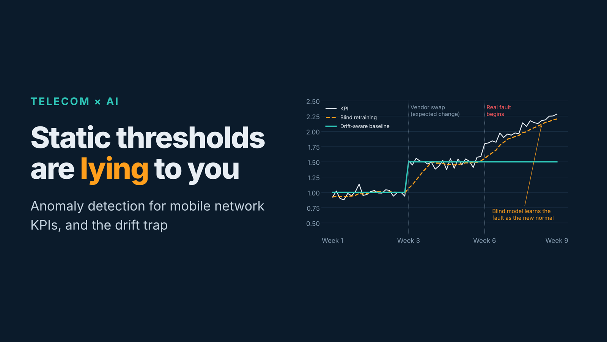
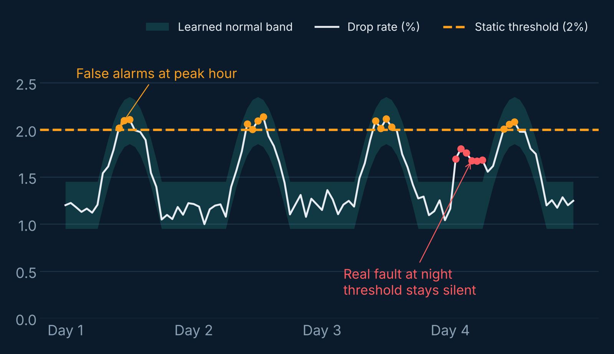
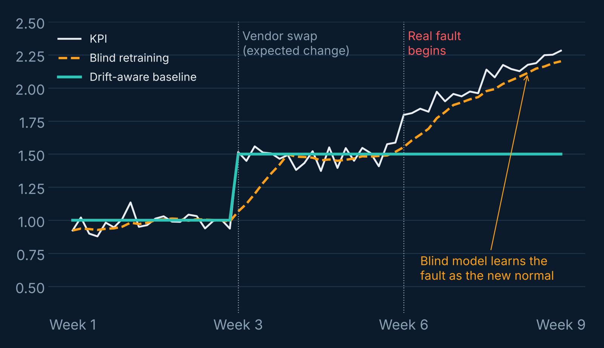

Your Network Alarms Are Lying to You
Why static KPI thresholds fail in mobile networks, and the “drift trap” that catches even ML models

At 3 a.m. a cell starts dropping calls. Nobody gets an alert.
At 9 a.m. the same cell gets busy, as it does every weekday, and the alarm goes off. An engineer checks it, finds nothing wrong, and closes the ticket.
If you work in network operations, you’ve lived this. I have too, as an RF and network planning engineer on a live 2G/3G/4G/5G network. The cause is almost always the same rule:
if drop_rate > 2%:
raise_alarm()Static thresholds are simple, explainable and easy to roll out across thousands of cells. They are also wrong far more often than most teams admit. Here’s why, and what to do instead.
1. Every cell has its own “normal”
A cell next to a highway, one covering a busy market and one in a quiet village behave completely differently. One threshold can’t fit all three. Set it low and the busy cells flood you with false alarms. Set it high and the quiet cell can degrade for weeks without anyone noticing.
2. Time changes everything

Traffic at 9 a.m. on a Monday looks nothing like traffic at 2 a.m. on a Sunday. A value that is alarming at night can be perfectly healthy at peak hour. A fixed line through the chart can’t tell the difference.
3. Networks change on purpose
This is the one that hurt most. I worked on a vendor swap of more than 500 sites, moving from one equipment vendor to another. KPI baselines shifted overnight. Nothing was broken: counters are simply defined differently between vendors.
Static thresholds lit up everywhere. The real faults were buried in the noise.
The first fix: let the model learn “normal”
Instead of telling the system what normal is, let it learn normal per cell, per hour and per day of the week, then flag deviations from that.
Even simple statistical and machine-learning baselines do this far better than fixed limits. In my work, an ML-based approach improved detection accuracy by about 18% compared with the static thresholds we had been using.
But learned baselines bring a new problem.
The drift trap

A model trained on last month’s data slowly goes stale. New sites go live, parameters are retuned, traffic grows and software is upgraded. This is called concept drift, and in telecom it’s the normal state, not the exception.
The obvious fix is to keep retraining on recent data. But retrain blindly and the model eventually learns a genuine fault as “normal.” A cell that has been degraded for two weeks stops looking anomalous. It hasn’t recovered; the model has simply got used to it.
So the real question is:
How do you adapt to normal change without absorbing genuine faults?
What I’m researching
That question is the focus of my MSc research in Data Science & AI at the University of Moratuwa: drift-aware anomaly detection and root-cause ranking for mobile RAN KPI data. At a high level, the approach has three parts:
- Use what you already know. Vendor swaps, new sites and parameter changes are planned in advance. A detector should use that context instead of guessing.
- Adapt carefully. Update the baseline only when a shift is consistent, explainable and not tied to a worse user experience.
- Don’t stop at “something is wrong.” “Cell 4521 is anomalous” still leaves an engineer digging through dozens of counters. Ranking which KPIs most likely explain each anomaly turns an alert into a starting point for root-cause analysis.
Why it matters
- Fewer false alarms mean engineers spend their time on problems customers actually feel.
- Root-cause ranking saves hours on every incident.
- A detector that survives network change means you don’t rebuild your monitoring every time the network evolves, which in this industry is constantly.
The bigger lesson
The most valuable thing I’ve learned working between RF engineering and data science is this: domain knowledge decides whether a model is useful.
A data scientist without network context will happily train on data whose definitions changed halfway through. An RF engineer without data skills will keep tuning thresholds by hand. The real value is where the two meet.
I’ll share results as the research progresses. How does your team handle KPI drift? Tell me in the responses. I read every one.
Pathum Dilshan is an RF & Network Planning Engineer at Mobitel, Sri Lanka, and an MSc Data Science & AI student at the University of Moratuwa. He writes about telecom, data and AI. Connect on LinkedIn or visit pmpdilshan.github.io.